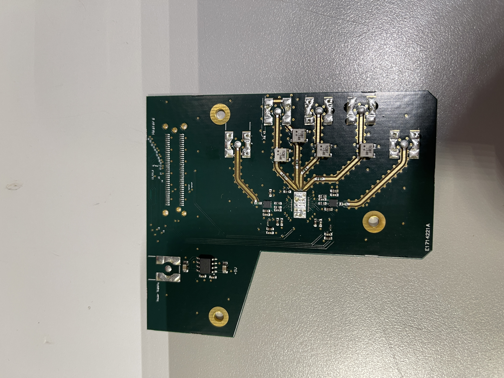

This project was part of my MSc thesis. I designed an RF PCB (Altium Designer) for the evaluation and Characterization of our Photonic Integrated Circuit which includes various Photodectors and Modulators. It's a 4-layer PCB (including power & ground plane) in FR4. The PCB has impedance match tracks for high frequency signals, on-board amplification, BiasTee's, LDO's as well as various biasing and heater control for our MZM's and PD's. The Phontonic circuits were also designed in house, I got the opportunity to collaborate with various Post-Docs and PhD students.

This project explores Real Time Interrupt mechanisms and how to implement them on the 68HC12 microprocessor. This project also helps show an understanding of the difference between maskable and non-maskable interrupts, focusing on how they affect the microprocessor. Using Real Time Interrupts and the internal clock of the microprocessor it is possible to implement more efficient programming techniques.

This project demonstrates my knowledge of control engineering and uses Matlab and Simulink for calculations and simulations. Transfer functions represent a systems relationship of the output to the input. Here I start with a given transfer function (ie system) and show how to deconstruct the function to help gain control of the system. I analyze the time-domain behavior of the uncompensated system by plotting the step response and determining the transient and steady-state properties. I also find the damping ratio, natural and undamped frequency, taking into consideration the overall properties of the system, checking the overall stability, steady state error, overshoot and rise time. This demonstrates my knowledge of how to analyze a given system, reverse engineer, improve a system and predict responses.

This project shows my ability to build a circuit (Cadence) given certain specifications. The three circuits I demonstrate are Current Mirror with an ideal current source, a Common Source Amplifier with a resistive load and a Common Source Amplifier then with an active load. This project is important becuase it shows how I can design a transistor level circuit that meet specifications of say a client.